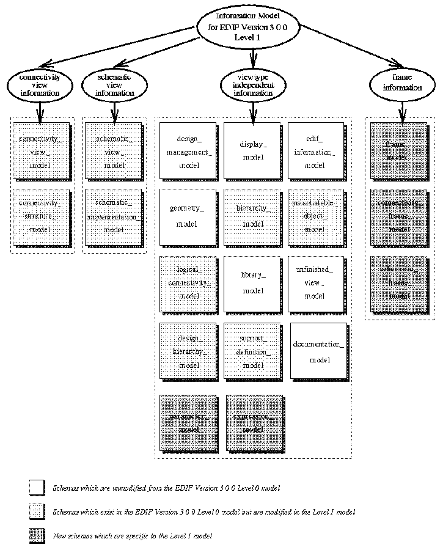

This document describes the information model of EDIF Version 3 0 0, a new version beyond EDIF Version 2 0 0[1, 2]. The goals of EDIF Version 3 0 0 include :
EDIF Version 3 0 0 descriptions can be specified at two different levels of complexity: Level 0 and Level 1. The Level 0 description is useful for sending static descriptions of electronic design data. The bulk of normal design transfer is expected to be done in Level 0. The Level 1 description supports parameterization of cells and schematic frames.
The model presented in this document covers the concepts of EDIF Version 3 0 0 Level 1. A brief summary of the changes from Level 0 to Level 1 is provided in appendix A. Appendix B identifies whether or not an EDIF Version 3 0 0 Level 1 construct has been modelled in the Information Model. Appendix C gives the permuted index of entities defined in the model. Appendix D states the point of definition of an EXPRESS object (including all schemas, entities, types and functions) in this document.
The aim of the information modelling activity has been to create a formal description of the design information carried by the new version of EDIF. This model represents formally the semantics of EDIF Version 3 0 0. It is intended to be used to improve the understanding of EDIF Version 3 0 0 and to ensure that the fundamental objects in EDIF Version 3 0 0 map as accurately as possible to the objects commonly found in CAE systems (e.g. nets, busses, ports and signals). In addition, the modelling process itself is valuable in helping to identify ambiguities in proposals for EDIF Version 3 0 0. This information model of EDIF Version 3 0 0 is the basis from which the EDIF Version 3 0 0 syntax has been derived.
The language which has been chosen for the modelling of EDIF Version 3 0 0 is EXPRESS[3] - an information modelling language. It is neither a programming language nor a database design language. It is designed to be the formal language used to describe a new proposed International Standard (ISO 10303) for the exchange of product definition data between computer application systems.
The first phase of the modelling activity was to identify the set of information which is relevant. At present, twelve categories of design information have been identified in Level 1 EDIF. Ten of these are extension of the concepts in Level 0 and two new concepts are introduced. The ten categories developed for the Level 0 model are:
In addition, EDIF Version 3 0 0 Level 1, two new categories of design information are identified.
In EDIF Version 3 0 0, different representation techniques are available to describe various aspects of a cell. Each representation (i.e. view or symbol) conveys a different set of design information as identified above. At present, EDIF Version 3 0 0 supports the following types of view: connectivity (analogous to the EDIF Version 2 0 0 netlist viewtype), schematic, symboliclayout, masklayout, pcblayout, logicmodel and behavior. In addition, EDIF Version 3 0 0 allows a symbol to be a form of cell representation in its own right. There may be a symbol for each type of view for which a coordinate space exists, i.e. schematic, masklayout, pcblayout and symboliclayout.
Each category of design information is modelled as an EXPRESS SCHEMA. A schema provides a context for the definition of things of similar interest. Each schema has been made independent of other schemas whenever possible so that the schema definition is more robust. Each EDIF Version 3 0 0 viewtype is also modelled separately in a different schema.
At present, the information model for EDIF Version 3 0 0 Level 1 consists of a total of 21 schemas. Note that the information model includes schemas which are unmodified from the EDIF 3 0 0 Level 0 model, schemas which exists in the Level 0 model but are modified in the Level 1 information model and some new schemas. Figure 1.1 shows the structuring of the schemas in the information model.

Some schemas contain general information which is useful in the definition of other schemas. The edif_information_model schema provides the information held by an EDIF file. The library_model schema contains the technology information of a library. The hierarchy_model schema describes the hierarchical information of a cell. The design_hierarchy_model schema holds the annotation data relating to a design hierarchy. The instantiatable_object_model schema defines various types of reusable template. The logical_connectivity_model schema specifies the view-wide connectivity. The design_management_model schema provides the design management information. The documentation_model schema describes the documentation provided for an object. The geometry_model schema describes the geometrical concepts. It is used by the display_model which associates geometry with display attributes to describe graphical primitives. Finally, the support_definition_model schema provides general entity, type and function definitions which are used by other schemas.
Other schemas are viewtype specific. At present, the information model completely describes the connectivity and schematic viewtypes. The information for the connectivity viewtype is specified in the connectivity_view_model and the connectivity_structure_model schemas. The connectivity_structure_model schema describes the structural connectivity of the connectivity view. The information for the schematic viewtype is specified in the schematic_view_model and the schematic_implementation_model schemas. The schematic_implementation_model describes the structural implementation of a schematic view. Other viewtypes, such as pcblayout, masklayout, symboliclayout, logicmodel and behavior are given as ``stubs'' in the unfinished_view_model schema.
The following new schemas are specific to EDIF Version 3 0 0 Level 1. The frame_model schema defines frames which allow users to repeatedly or conditionally include a subcircuit in a design. The connectivity_frame_model schema describes the structural connectivity of a frame in a connectivity view. The schematic_frame_model schema describes the structural connectivity and the implementation information of a frame in a schematic view. The expression_model schema describes different types of expressions supported by Level 1 EDIF. Finally The parameter_model schema defines various types of parameters which are used to support parameterization of cells.